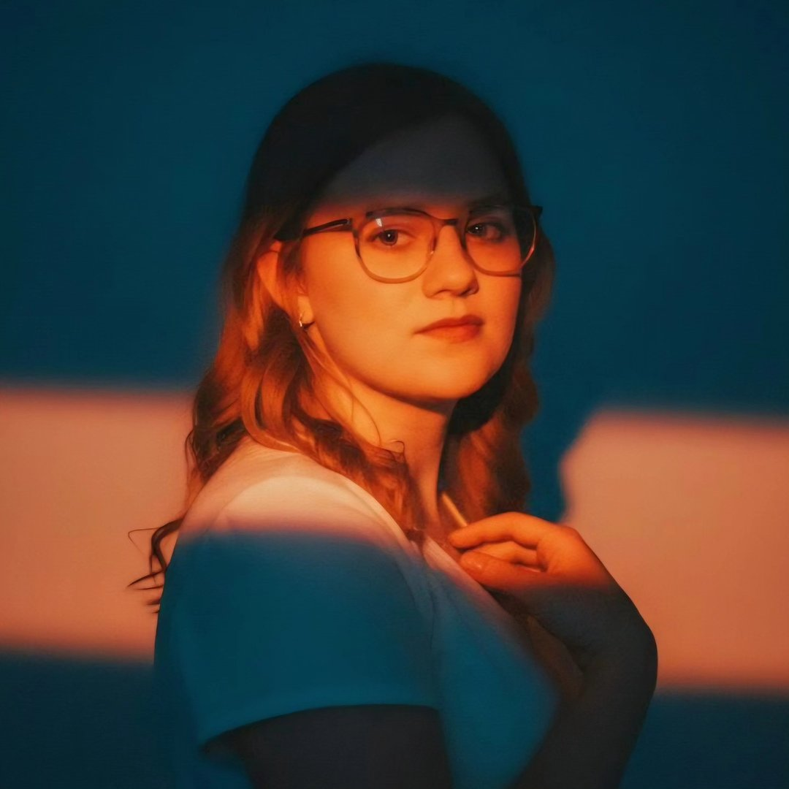

I’m a poet and writer exploring the textures of memory, domestic interiors, spiritual attention, and the forms that shape language. My work often moves between observation, fragmentation, repetition, and devotion.
Get in touch
My work gathers fragments rather than arguments. I’m interested in the emotional architecture of ordinary life — rooms, rituals, repetitions, absences, devotion, motherhood, and the ways language records what cannot be held directly.
Voice-driven work shaped by tone, compression, rhythm, and the charged space around what is left unsaid.
Hybrid and experimental prose that blurs the line between reflection, observation, and fragment.
Archival thinking, soft minimalism, domestic symbolism, and restrained visual language.
“My hummingbird heart
beats
and I
remember
all the times
it slammed into the glass
and kept going”
This site functions as an archive of ongoing work: poems, visual studies, fragments, and printed books gathered over time rather than arranged into a single statement.